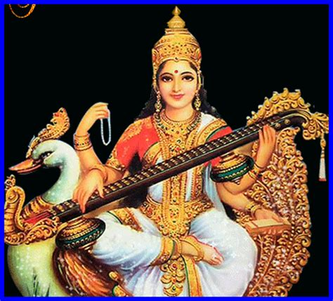

|
|||||
lordess saraswathi devi
|  |
Ravanasura asked Shiva about taking a boon in return to the Puja he made. Shiva replied that it is not good for a Brahmin to ask returns for the Puja. A real Brahmin must satisfy with the Dana and Dakshina given by Yajamani. He should never ask what to give as Dana or Dakshina. Parvathi told that Ravana can ask any thing he wishes. Ravanasura was attracted by the Lanka palace. He asked the palace as a boon. She accepted. She gave Lanka palace to Ravanasura as Dakshina! She was fully depressed. Seeing that, Ravana asked Jaganmata to live in Lanka. Shiva disappeared. Parvathi told that she will be in the form of Shankari (Shakti peeth), as long as Ravana follows her word. Also warned that she will leave Lanka if Ravana don't cares her. She is going to Kailasa with sorrow and grief. |
|
At Kashmir, Goddess Saraswati appeared before her. Saraswati is telling consoling words to Parvathi. Parvathi was frustrated and told Saraswati that she is speaking like a parrot. Parvati called her Sarika (One who speaks like Parrot). She told her to stay there and tell this type of words to all. By the respect on Parvathi, Saraswati appeared in Kashmir as a Shakti peeth. Parvathi went to Kailasa. |